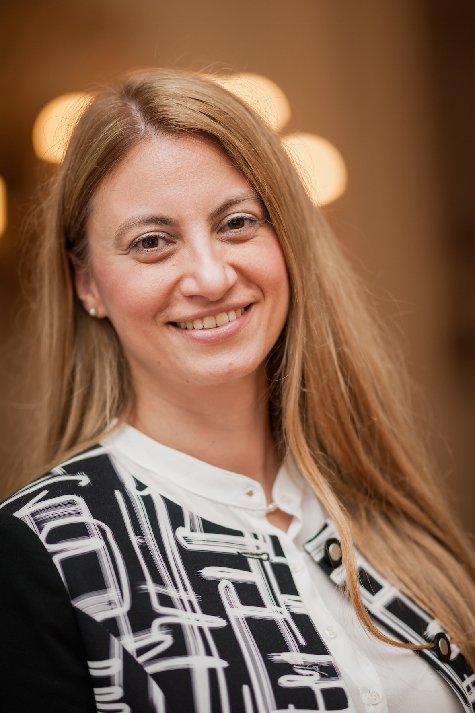
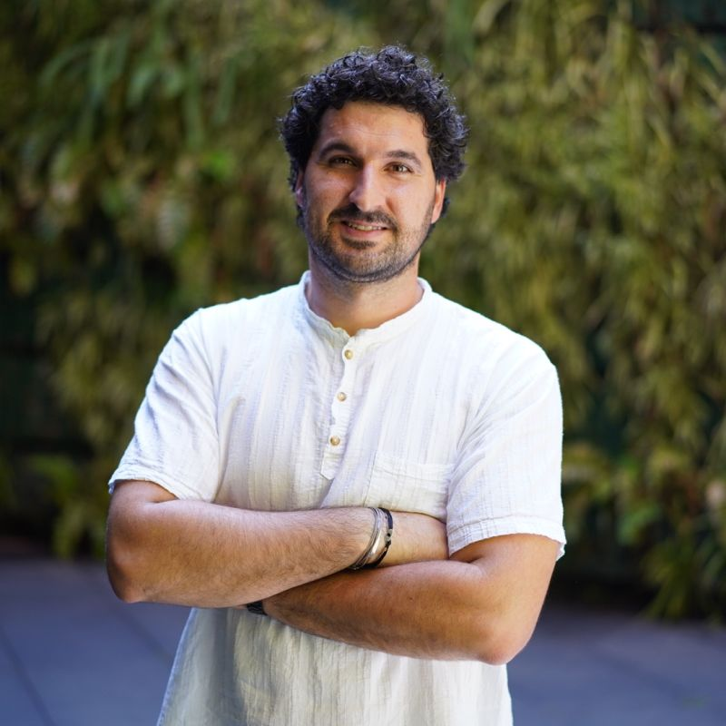

Team
Our Team

Konstantionos Gkatzis
Gioannis Kyriakidis
Leadership
Dr. Başak KALE, Oxon (DPhil.), LSE (MSc.) - Director
Dr. Basak Kale has extensive experience as an independent ethics expert for the European Commission (Ethics and Research Integrity Sector, DG Research and Innovation). She has worked on project initiation, management, monitoring, auditing, review, and assessment across European integration, social sciences, business ethics, and research ethics.
She has taught and conducted research at institutions including University of British Columbia, Simon Fraser University, Harvard University, UC Berkeley, Hitotsubashi University, Bogazici University, and METU. She has also consulted for organisations including UNHCR, Council of Europe, OSCE, and the UN.
Qualifications: DPhil (University of Oxford), PhD (METU), MSc (LSE), BSc (METU).